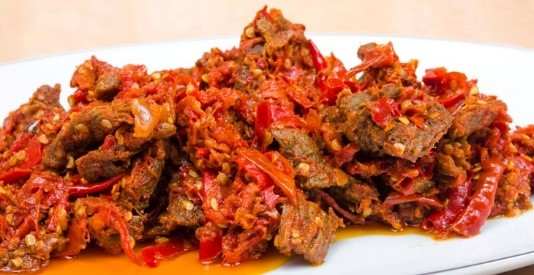

Dendeng Balado

Bahan - Bahan
- 1 kg daging sapi, iris tipis
- 1 sdt garam
- minyak goreng secukupnya
Bumbu Balado
- 150 ml SASA Sambal Asli
- 20 siung bawang merah, tumbuk kasar
- 2 sdm air jeruk nipis
- 1/2 sdt SASA Penyedap Rasa
Cara Membuat
- Campur irisan daging dan garam, aduk rata.
- Susun irisan daging dalam Loyang lalu oven hingga kering
- Goreng irisan daging dalam minyak goreng hingga matang dan renyah, angkat dan tiriskan
- Tumis bawang merah hingga layu, masukan SASA Sambal Asli, SASA Penyedap Rasa dan air jeruk nipis, aduk rata
- Masukan daging yang sudah digoreng. Aduk rata dan sajikan